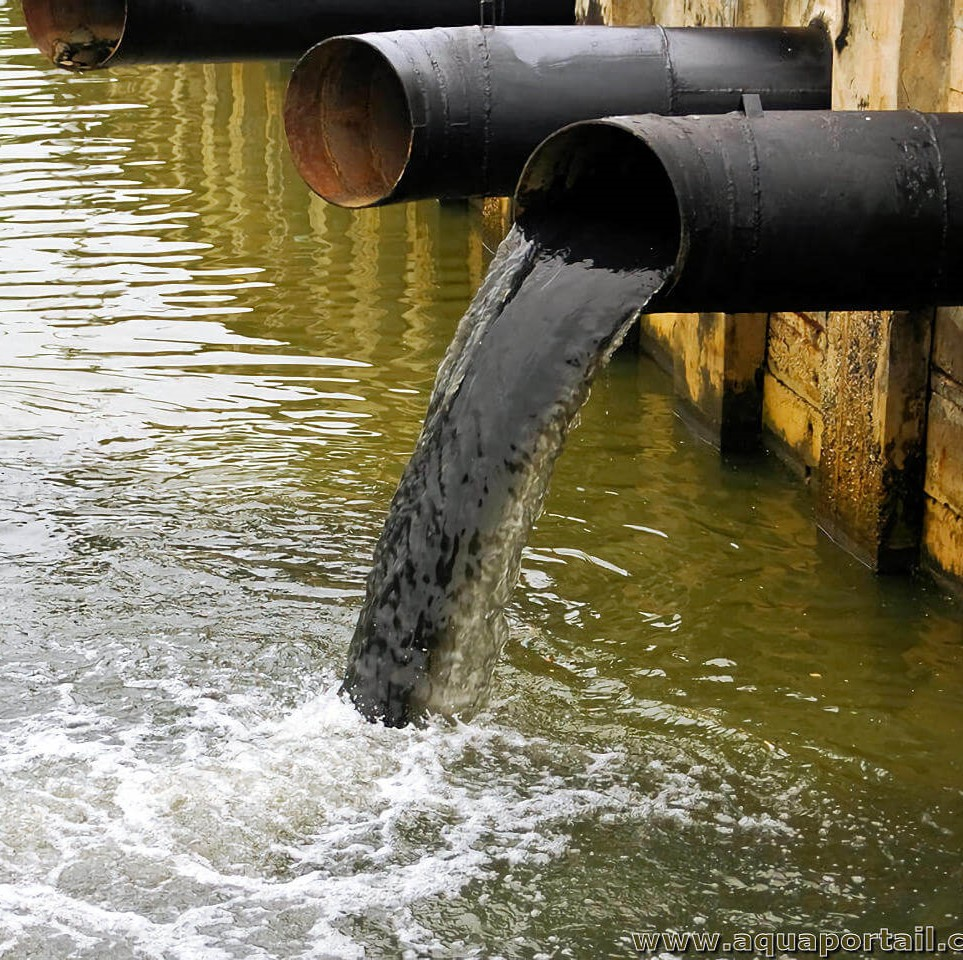

La contamination par les métaux lourds perturbe la croissance et la
reproduction des mollusques, car ces substances toxiques s'accumulent dans
leurs tissus. Cela entraîne des malformations et donc une baisse de leur
leur nombre.
Les métaux lourds, tels que le
mercure et le cadmium, sont un problème environnemental majeur, car ces
substances toxiques se retrouvent dans la chaîne alimentaire marine. Ce
phénomène impacte également les populations humaines qui dépendent des
fruits de mer, avec des risques pour la santé publique à cause de l'ingestion
de ces métaux lourds.